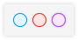

版本号

作者
修改内容

链接

预计上线时间
1.1.0
潘
1.新增项目列表
2.新增项目类型管理
3.批量创建任务功能
4.创建任务时，可以选择类型
5.项目关联任务、类型、点位，但点位和类型不关联
http://axure.rbdfb.com/仁本智慧监测/第三方巡检1.1.0/#id=o6wf4l&p=登录&g=1
8月19日
1.0
潘
新建项目
7月29日
文档说明：
1. 最新版本的文档已包括目前为止所有需求 (之前版本的文档仅供查阅历史使用)
2. 红色、紫色 、蓝色 标注的内容为当前版本的需求，
红色标注为本版本中新增的需求，
蓝色标注为本版本中修改内容的需求，
紫色标注为本版本中优先级较低的需求
灰色 标注的内容为历史版本的需求
3. 注意收藏该页面，本项目的所有产品文档和原型都会归集到这里
使用说明 (点击文档地址进入查看时使用) ：
1. 在目录顶部选中 红色、紫色 、蓝色 即可只查看当前版本的页面
2. 在页面右侧选中 红色、紫色 、蓝色 即可只查看当前版本的注释
3. “Alt/⌘ + 点击”目录中的展开或折叠按钮，可展开或折叠所有同级目录
4. 可使用“A”“D”左右滑动页面或注释内容（点击页面内容后可滑动页面/点击注释后可滑动注释）
5. 目录上方选中该按钮，会高亮有操作事件的内容，避免遗漏
